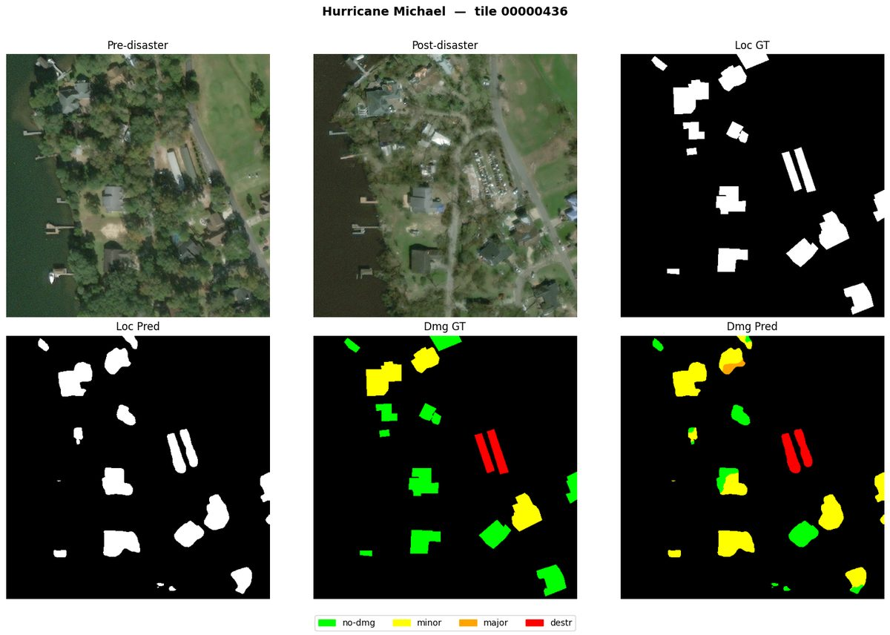

F1 0.8136
one model vs. a 42-model ensemble (F1 0.8112)
Disaster Damage Detection
A two-phase deep-learning pipeline that reads post-disaster satellite imagery: first localize every building, then classify how badly each one is damaged. The joint model, JointDamageNet, beats the xView2 Challenge’s winning 42-model ensemble with a single network, and posts the highest localization F1 (0.8752) of all compared methods.
github.com/sakhi20/Disaster-Damage-Detection ↗